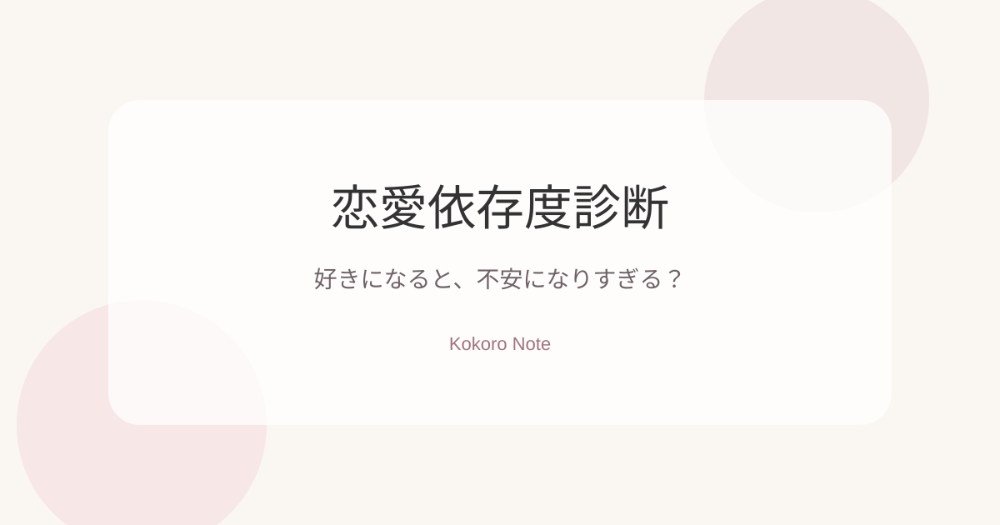

Love Shindan
恋愛依存度診断
好きになると不安になりやすい？それとも自然体でいられるタイプ？10個の質問から、あなたの恋愛のクセをそっと読み解きます。

AdSense placeholder：承認後に広告コードをここへ入れる
AdSense placeholder：結果下広告
Love Shindan
好きになると不安になりやすい？それとも自然体でいられるタイプ？10個の質問から、あなたの恋愛のクセをそっと読み解きます。
